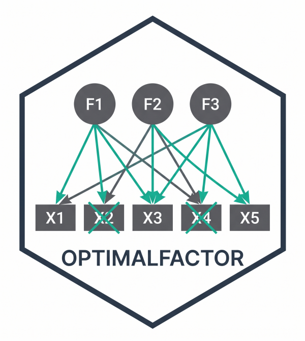

Split-Half Cross-Validation of a Factor Model
Source:R/cross_validate_cfa.R
cross_validate_cfa.RdAssesses the out-of-sample stability of a one-factor scale by repeated
split-half cross-validation. The sample is randomly split many times; on each
split the one-factor model is fitted and its fit and reliability are recorded
on independent subsamples. Two modes are available: (a) confirm a
fixed item set (default), and (b) test the procedure by
re-deriving a short form with redundancy_short_form in the
calibration half and confirming it in the validation half (set derive_k).
Mode (b) also returns how often each item is selected, exposing whether a
data-driven short form capitalizes on chance.
Usage
cross_validate_cfa(
data,
items,
n_splits = 200,
derive_k = NULL,
groups = NULL,
min_per_group = 3,
estimator = "WLSMV",
targets = c(cfi = 0.95, rmsea = 0.08),
seed = 2026
)Arguments
- data
Data frame with the item responses.
- items
Character vector with the item names of the scale to validate (fixed mode) or the candidate pool (derivation mode).
- n_splits
Number of random splits. Default 200.
- derive_k
If
NULL(default), the fixeditemsset is confirmed across holdout subsamples. If an integer, aderive_k-item short form is re-derived in each calibration half and confirmed in the validation half.- groups, min_per_group
Passed to
redundancy_short_formwhenderive_kis set (to preserve content coverage). DefaultNULL, 3.- estimator
Estimator passed to
lavaan::cfa. Default"WLSMV".- targets
Named numeric vector of pass thresholds for the fraction of subsamples meeting fit. Default
c(cfi = 0.95, rmsea = 0.08).- seed
Random seed for reproducibility. Default 2026.
Value
A list. In fixed mode: summary (P10/P50/P90 of cfi, rmsea, srmr,
omega across holdout subsamples) and pct_meeting (fraction meeting all
targets). In derivation mode it adds selection_freq (per-item
selection frequency) and the confirmation summary of the derived forms.
References
MacCallum, R. C., Roznowski, M., & Necowitz, L. B. (1992). Model modifications in covariance structure analysis: The problem of capitalization on chance. Psychological Bulletin, 111(3), 490–504.
Examples
if (FALSE) { # \dontrun{
# confirm a fixed 7-item scale out of sample
cross_validate_cfa(mydata, short_items, n_splits = 200)
# test the derivation procedure itself
cross_validate_cfa(mydata, all_items, derive_k = 7, n_splits = 100,
groups = list(A = a_items, B = b_items))
} # }